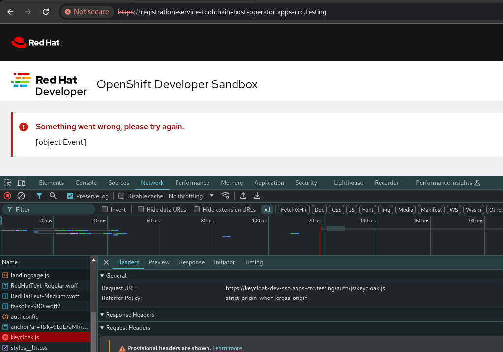

Contributing
This document describes how to install KubeSaw in a development environment.
Prerequisites
OpenShift Cluster
Ensure you have access to an OpenShift 4.6+ cluster with cluster admin privileges and log in using oc login
Required Tools
Install the required tools.
Authentication
Configure authentication for the cluster using one of the following options:
-
Configure your own Keycloak server and set up authentication on the OpenShift cluster: configuring internal oauth
-
Deploy and configure keycloak internally as part of the cluster. Just add
DEV_SSO=trueparameter to thedevtargets. For eg.:make dev-deploy-latest DEV_SSO=truewill deploy latest version of the operators with a preconfigured keycloak instance and one default keycloak useruser1@user.uswith passworduser1. If you are presented with the following error, then you need to accept the self-signed certificate of the dev Keycloak instance first. Go to `https://keycloak-. /auth (the complete link is printed out at the end of the command) and accept the certificate.:

NOTE: This option only works with OCP and CRC clusters atm.
- If you're a RedHatter, contact a member of the KubeSaw Team for instructions on how to configure the cluster to use our internal Dev SSO.
Install
Remove Self Provisioner Role
It is strongly recommended to remove the self-provisioner role to disallow users from creating their own namespaces. This is because KubeSaw is designed to create/manage namespaces for users automatically. It creates these namespaces based on predefined templates that also define resource limits so only these namespaces should be accessible to KubeSaw users.
Run the following commands:
oc patch clusterrolebinding.rbac self-provisioners -p '{"subjects": null, "metadata": {"annotations":{"rbac.authorization.kubernetes.io/autoupdate": "false"}}}'
oc adm policy remove-cluster-role-from-group self-provisioner system:authenticated:oauth
Install KubeSaw
Clone this repository git clone git@github.com:codeready-toolchain/toolchain-e2e.git
This repository provides you multiple Makefile targets that you can use - it depends on which version of KubeSaw operators you want to install.
NOTE: If the cluster is an OSD cluster, then set the variable IS_OSD=true when running any of the Makefile targets (for example: make dev-deploy-latest IS_OSD=true).
IMPORTANT: Make note of the Registration Service URL that is printed at the end of the target execution.
Latest greatest KubeSaw
Run the following to install the latest greatest KubeSaw operators in dev mode:
make dev-deploy-latest
Latest greatest KubeSaw for AppStudio
Run the following to install the latest greatest KubeSaw operators in dev mode for AppStudio environment:
make appstudio-dev-deploy-latest
Local version
If you want to install a local version of a specific KubeSaw operator in dev mode then:
- Configure your quay account for dev deployment
- Clone the
toolchain-e2erepo (git clone git@github.com:codeready-toolchain/toolchain-e2e.git) and the operator(s) repo(s) that you'd like to test locally. They have to share the same parent folder for the local deployment to work, eg:
$ tree -d -L 1
.
├── host-operator
├── member-operator
├── registration-service
├── toolchain-e2e
- From the
toolchain-e2erepo folder, run any of the following commands:
# To deploy local versions of all repositories:
make dev-deploy-e2e-local
# To deploy local version only of the host-operator repo:
make dev-deploy-e2e-host-local
# To deploy local version only of the member-operator repo:
make dev-deploy-e2e-member-local
# To deploy local version only of the registration-service repo:
make dev-deploy-e2e-registration-local
ToolchainStatus
Run the following command:
$ oc get toolchainstatus -n toolchain-host-operator
NAME MURS READY LAST UPDATED
toolchain-status 0 True 2021-03-24T22:39:36Z
and ensure the Ready status is True
Register a new KubeSaw User
-
Open the Registration Service URL in a browser and sign up for an account.
-
Wait for the message "Your OpenShift Developer Sandbox account is waiting for approval"

Manual Approval
Manual approval means each UserSignup must be approved by editing the UserSignup resource for a particular user.
- Run the following command to get the name of the UserSignup resource:
oc get usersignupThe name should be a UUID eg. 66e54c45-9868-4a25-81ca-d56b600c8491 - Approve the UserSignup
oc patch usersignup -p '{"spec":{"states":["approved"]}}' --type=merge <usersignup name> -n <host operator namespace>
Automatic Approval
By enabling automatic approval in the KubeSaw configuration, users will be automatically approved and provisioned without admin intervention.
Enable automatic approval by running the following command:
oc patch ToolchainConfig -p '{"spec":{"host":{"automaticApproval":{"enabled":true}}}}' --type=merge config -n <host operator namespace>
Using KubeSaw instance
After approval, the registration service will display a link to start using the KubeSaw instance. The link will go to the user's Dev Console, but first, a login page will appear with two options.:
- kube:admin
- The authentication method configured in the Authentication step
 Select option 2 and log in using the same account used from the Register a KubeSaw User section step.
Select option 2 and log in using the same account used from the Register a KubeSaw User section step.
After logging in, the user will have access to only the namespaces created for them.
Cleanup
NOTE: the make targets are available in the toolchain-e2e repo (git clone git@github.com:codeready-toolchain/toolchain-e2e.git)
Remove Only Users and Their Namespaces
Run make clean-users
Remove All Sandbox-related Resources
Run make clean-e2e-resources